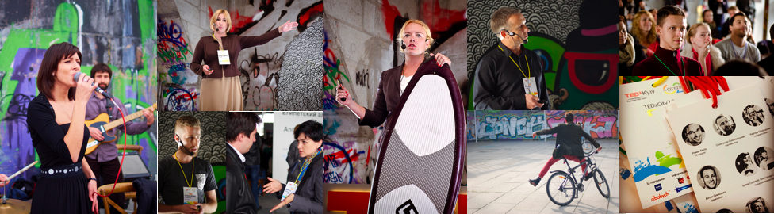
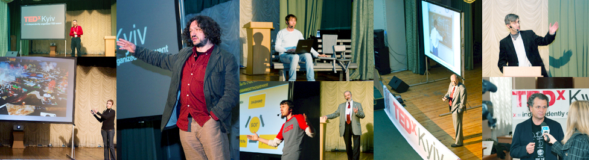

-
TEDxCity2.0.
13 жовтня, в суботу, на глобальній події TEDxCity2.0 разом з 70 містами по всьому світу – від Амстердаму до Сінгапуру – в Києві обговорювали та розпочинали проекти міста майбутнього, Міста 2.0. Ми розмовляли про проекти, що по-новому визначають міські маршрути спілкування, творчості, праці, пересування, освіти та інших видів міської діяльності.
13 жовтня 2012галерея АртПРИЧАЛ
-
TEDxKyiv 2012. Таланти. Освіта. Розвиток.

20 травня, у неділю, у приміщенні «Українського дому» відбулася шоста конференція ідей, вартих поширення, TEDxKyiv 2012 «Талант. Освіта. Розвиток» для лідерів думок і інноваторів з усіх куточків України та з-поза її меж.
20 травня 2012Український Дім
-
TEDxKyiv 2011. Підприємництво

18 червня, в суботу, у приміщенні культурно-освітнього центру «Майстер Клас» відбулася п’ята конференція ідей, вартих поширення, TEDxKyiv 2011 «Підприємництво». Обрану тему ми розглянули максимально широко: трансформаційне підриємництво у бізнесі та організаціях з долею ризику, спрямоване на зміну свого життя та реальності навколи; «внутрішнє» підприємництво, індивідуальна активна і відповідальна позиція; підприємництво у суспільстві, в компаніях, у спільнотах, що здатне перетворювати світ людини або групи людей на краще.
18 червня 2011КОЦ «Майстер Клас»
-
TEDxKyiv 2010. WOMAN

TEDKyiv + TEDWomen — це творчий простір для діалогу між жінками і чоловіками, щоб краще розуміти один одного, вибудовувати ефективні стосунки в родині, організації, бізнесі та суспільстві взагалі. Це також ще одна гарна можливість зустрітися у колі активних у своїй справі та прогресивних в думках і прагненнях людей, які створюють нові напрямки, постійно вчаться, підтримують один одного, піднімають актуальні питання і рухаються вперед.
8-9 грудня 2010ФонДюБар
-
TEDxKyiv 2010. Про мистецтво

11 вересня TEDKyiv в рамках фестивалю Гогольfest провів конференцію, присвячену мистецтву і ролі людини в ньому. Зі сцени конференції спікери говорили про те, що нового можна знайти в мистецтві і як мистецтво здатне змінити бачення розвитку світу.
11 вересня 2010Студiя Довженка
-
TEDxKyiv 2010. Краса розуму: ідеї для України
Друга подія TEDx в Україні «Краса розуму: ідеї для України» відбулась 24 квітня 2010 року в Києві в Будинку вчителя. Вона зібрала 18 виступаючих, 162 людини в аудиторії та 224 глядача веб-трансляції.
24 квітня 2010Будинок Вчителя
-
TEDxKyiv 2009

Перша подія програми TEDx в Україні відбулася 18 жовтня 2009 року в Києві в учбовому центрі i-klass. Вона мала назву «Що Україні потрібно сьогодні». Аудиторія події склала більше 200 чоловік, живу трансляцію подивилось більше 80.
18 жовтня 2009КОЦ «Майстер Клас»